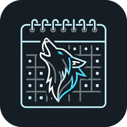

CalenZan
Tu Google Calendar y tus tareas, siempre a la vista en el escritorio de Windows.
Gratis, sin anuncios y sin cuentas nuevas: se conecta a tu cuenta de Google y se sincroniza con tu móvil.
Qué hace
- Muestra tu calendario del mes o de la semana y la lista de lo que viene: eventos y tareas de Google Tasks.
- Vive en el fondo del escritorio: no estorba cuando abres otros programas.
- Con un clic en un día ves todo lo de ese día en grande. Desde ahí puedes crear, editar y borrar eventos y tareas, y los cambios aparecen en tu móvil.
- Añadir rápido escribiendo una frase («Cena con Ana mañana a las 21»).
- Avisos de Windows unos minutos antes de cada evento.
- Varias cuentas de Google, calendarios visibles a tu elección y tareas atrasadas.
- Totalmente personalizable: tamaño, transparencia, colores, tema, semana, formato de hora y un atajo de teclado para traerlo al frente.
Tu privacidad. No hay servidores míos: la app habla directamente con Google desde tu ordenador. No recojo ningún dato, no hay anuncios ni analítica.
Leer la política de privacidad.
English
CalenZan is a free, ad-free Windows desktop widget that shows your Google Calendar events and Google Tasks, and lets you create, edit and delete them. It runs entirely on your PC and talks directly to Google; the developer receives no data. Privacy policy · Download